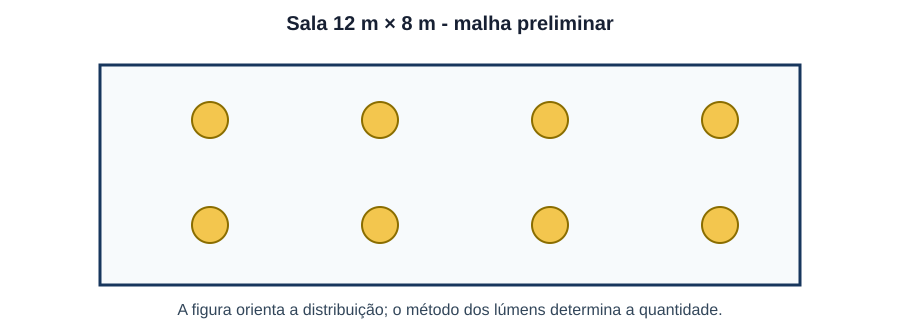
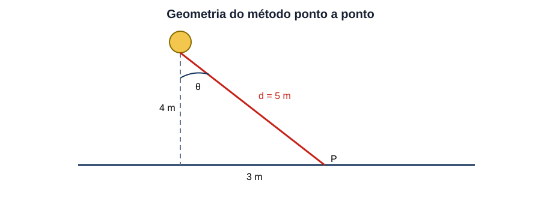
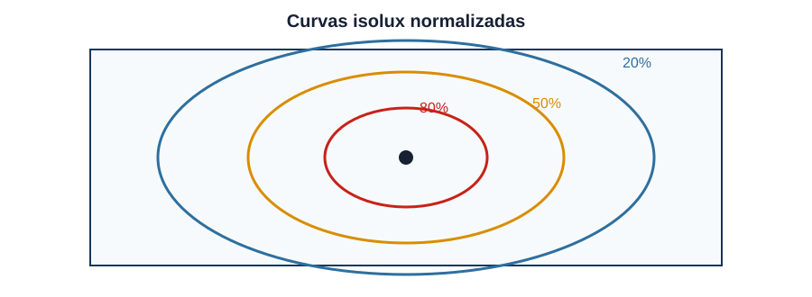
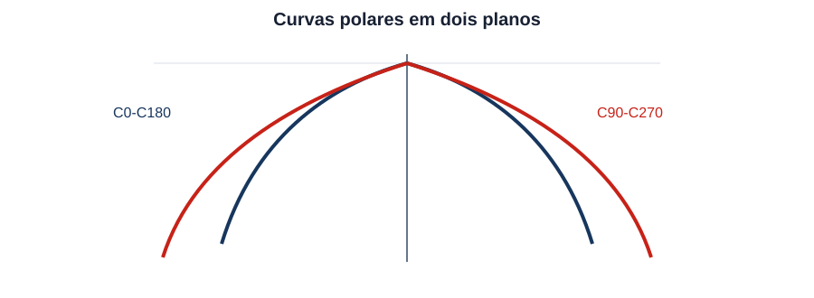
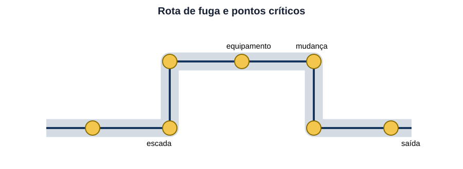
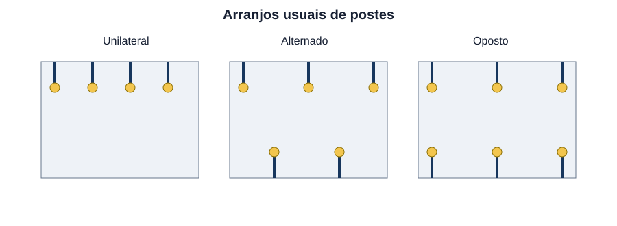

Luminotécnica & Iluminação Pública
30 questões autorais calibradas pelo padrão IDECAN • Bloco Prata
| Questão 01 | Grandezas Fotométricas • Aplicação |
Em um memorial luminotécnico, o projetista precisa registrar: o fluxo total emitido por uma luminária, a intensidade em uma direção, a luz incidente por unidade de área e a grandeza associada à sensação de brilho de uma superfície. A sequência correta de grandezas é:
A) fluxo luminoso em lux; intensidade luminosa em lúmens; iluminância em candelas; luminância em watts.
B) intensidade luminosa em lúmens; fluxo luminoso em candelas; luminância em lux; iluminância em $cd/m^2$.
C) fluxo luminoso em lúmens; intensidade luminosa em candelas; iluminância em lux; luminância em $cd/m^2$.
D) luminância em lúmens; iluminância em candelas; fluxo luminoso em lux; intensidade em $cd/m^2$.
Gabarito Comentado: Alternativa C
Fluxo luminoso mede a potência luminosa percebida total e é expresso em lúmens. Intensidade luminosa é fluxo por ângulo sólido, em candelas. Iluminância é fluxo incidente por área, em lux. Luminância descreve a intensidade aparente por área projetada, em $cd/m^2$.
Análise das armadilhas:Associe cada grandeza ao objeto medido: fonte inteira, direção, plano iluminado e superfície observada.Como pensar nesta questão:A unidade confirma a associação, mas não deve ser a única pista.
| Questão 02 | Eficiência Luminosa • Retrofit |
Duas luminárias apresentam os seguintes dados de entrada: modelo X, $4.800\,lm$ e $48\,W$; modelo Y, $5.250\,lm$ e $50\,W$. Desconsiderando diferenças de distribuição fotométrica, qual comparação é correta?
A) Y possui $105\,lm/W$ e supera X em aproximadamente $5\%$.
B) X possui $96\,lm/W$ e supera Y em aproximadamente $9\%$.
C) Y possui $96\,lm/W$ e supera X em aproximadamente $10\%$.
D) X possui $100\,lm/W$ e Y possui $105\,lm/W$, com diferença de $2\%$.
Gabarito Comentado: Alternativa A
A eficácia de X é $4.800/48=100\,lm/W$ e a de Y é $5.250/50=105\,lm/W$. A vantagem relativa é $(105-100)/100=5\%$. O maior fluxo isoladamente não basta; é necessário relacioná-lo à potência de entrada.
Análise das armadilhas:Em comparação energética, calcule lúmens por watt para cada alternativa tecnológica e só depois obtenha a diferença percentual usando o modelo de referência no denominador.Como pensar nesta questão:Em comparação energética, calcule lúmens por watt para cada alternativa tecnológica e só depois obtenha a diferença percentual usando o modelo de referência no denominador.
| Questão 03 | Método dos Lúmens • Número de Luminárias |
Uma sala de $12\,m\times8\,m$ deve manter iluminância média de $500\,lx$. Cada luminária fornece $7.200\,lm$, com fator de utilização $0{,}65$ e fator de manutenção $0{,}80$. O arranjo preliminar é mostrado na figura.

Quantas luminárias são necessárias pelo método dos lúmens, arredondando para cima?A) 9 luminárias.
B) 11 luminárias.
C) 16 luminárias.
D) 13 luminárias.
Gabarito Comentado: Alternativa D
Aplica-se $N=EA/(\Phi UF\,MF)$. Assim, $N=500\cdot(12\cdot8)/(7.200\cdot0{,}65\cdot0{,}80)=12{,}82$. Como não se instala fração de luminária e a meta é mínima, adota-se 13 unidades. O arranjo final ainda deve ser verificado ponto a ponto quanto à uniformidade.
Análise das armadilhas:No método dos lúmens, mantenha no numerador a luz requerida no plano e, no denominador, o fluxo útil mantido por luminária.Como pensar nesta questão:Arredonde apenas ao final.
| Questão 04 | Fator de Manutenção • Iluminância Inicial |
Um ambiente deve apresentar $500\,lx$ ao final do período entre manutenções. Para um fator de manutenção global de $0{,}75$, qual iluminância média inicial deve ser prevista e qual perda percentual foi admitida?
A) $375\,lx$ e perda de $25\%$.
B) $625\,lx$ e perda de $20\%$.
C) $667\,lx$ e perda de $25\%$.
D) $667\,lx$ e perda de $33\%$.
Gabarito Comentado: Alternativa C
A iluminância mantida é $E_m=MF\cdot E_i$. Logo, $E_i=500/0{,}75=666{,}7\,lx$. O fator $0{,}75$ representa retenção de $75\%$ do desempenho inicial, isto é, perda acumulada de $25\%$.
Análise das armadilhas:Não interprete $1/MF$ como percentual de perda.Como pensar nesta questão:Primeiro calcule a condição inicial; depois obtenha a perda por $1-MF$.
| Questão 05 | Índice do Local • Geometria |
Para um recinto retangular de comprimento $12\,m$, largura $8\,m$ e altura útil entre luminárias e plano de trabalho de $2{,}5\,m$, o índice do local $K=CL/[h_m(C+L)]$ vale aproximadamente:
A) $K=0{,}96$.
B) $K=1{,}92$.
C) $K=2{,}40$.
D) $K=3{,}84$.
Gabarito Comentado: Alternativa B
Substituindo, $K=(12\cdot8)/[2{,}5(12+8)]=96/50=1{,}92$. O índice combina proporções do recinto e altura útil, sendo empregado na obtenção do fator de utilização a partir das tabelas do fabricante.
Análise das armadilhas:Use a altura entre a luminária e o plano de trabalho, não necessariamente o pé-direito.Como pensar nesta questão:Coloque a soma das dimensões no denominador antes de multiplicar por $h_m$.
| Questão 06 | Método Ponto a Ponto • Lei do Cosseno |
Uma luminária pontual está $4\,m$ acima de um plano horizontal. O ponto analisado encontra-se a $3\,m$ da projeção vertical da luminária, e a intensidade nessa direção é $900\,cd$. A geometria é indicada na figura.

A iluminância horizontal no ponto é aproximadamente:A) $28{,}8\,lx$.
B) $23{,}0\,lx$.
C) $36{,}0\,lx$.
D) $45{,}0\,lx$.
Gabarito Comentado: Alternativa A
A distância inclinada é $d=5\,m$ e $\cos\theta=4/5=0{,}8$. Para plano horizontal, $E=I\cos\theta/d^2=900\cdot0{,}8/25=28{,}8\,lx$. Equivalentemente, $E=I\cos^3\theta/h^2$.
Análise das armadilhas:Separe distância até a fonte e ângulo de incidência.Como pensar nesta questão:Usar apenas $I/d^2$ fornece iluminância normal ao raio, não a componente sobre o plano horizontal.
| Questão 07 | Lei do Inverso do Quadrado • Comparação |
Um ponto recebe $200\,lx$ de uma fonte considerada pontual a $3\,m$, com incidência normal. Mantidas fonte e orientação, qual iluminância será obtida a $5\,m$?
A) $90\,lx$.
B) $72\,lx$.
C) $120\,lx$.
D) $333\,lx$.
Gabarito Comentado: Alternativa B
Pela lei do inverso do quadrado, $E_2/E_1=(d_1/d_2)^2=(3/5)^2=0{,}36$. Portanto, $E_2=200\cdot0{,}36=72\,lx$. A redução não é linear com a distância.
Análise das armadilhas:Ao comparar dois pontos no mesmo eixo, use diretamente a razão quadrática das distâncias.Como pensar nesta questão:Isso reduz erros e dispensa calcular a intensidade luminosa.
| Questão 08 | Luminância • Superfície Difusora |
Uma superfície aproximadamente lambertiana recebe $500\,lx$ e apresenta refletância difusa de $0{,}60$. Admitindo $L=\rho E/\pi$, sua luminância é aproximadamente:
A) $47{,}7\,cd/m^2$.
B) $300{,}0\,cd/m^2$.
C) $188{,}5\,cd/m^2$.
D) $95{,}5\,cd/m^2$.
Gabarito Comentado: Alternativa D
$L=0{,}60\cdot500/\pi=300/\pi\approx95{,}5\,cd/m^2$. A iluminância descreve a luz incidente; a luminância depende também da capacidade da superfície de refletir essa luz na direção observada.
Análise das armadilhas:Em superfícies difusoras, não confunda refletância com multiplicador direto de luminância sem o fator $\pi$ previsto na relação lambertiana.Como pensar nesta questão:Em superfícies difusoras, não confunda refletância com multiplicador direto de luminância sem o fator $\pi$ previsto na relação lambertiana.
| Questão 09 | Uniformidade • Avaliação do Projeto |
Em uma malha de medição, obtiveram-se $E_{min}=120\,lx$, $E_{med}=200\,lx$ e $E_{max}=310\,lx$. Se o critério do projeto exige $U_0=E_{min}/E_{med}\ge0{,}60$, a avaliação correta é:
A) $U_0=0{,}39$ e o critério não é atendido.
B) $U_0=0{,}65$ e o critério é atendido com margem.
C) $U_0=0{,}60$ e o critério é atendido no limite.
D) $U_0=1{,}67$ e o critério é atendido no limite.
Gabarito Comentado: Alternativa C
$U_0=120/200=0{,}60$. Portanto, o requisito é atendido exatamente no limite. A razão $E_{min}/E_{max}$ representa outro indicador e não deve substituir a definição fornecida.
Análise das armadilhas:Antes de calcular uniformidade, confira qual razão foi exigida.Como pensar nesta questão:Bancas costumam alternar $E_{min}/E_{med}$ e $E_{min}/E_{max}$ para testar leitura atenta.
| Questão 10 | Curvas Isolux • Diagnóstico |
A figura apresenta curvas isolux normalizadas de uma luminária instalada sobre uma área de circulação.

Considerando que curvas mais internas representam maior iluminância, qual intervenção tende a reduzir a diferença entre o centro e as bordas sem aumentar o fluxo total instalado?A) Empregar distribuição mais aberta e revisar o espaçamento para aumentar a sobreposição nas bordas.
B) Manter a óptica e aproximar todas as luminárias do centro geométrico da área.
C) Reduzir a altura de montagem e concentrar ainda mais a distribuição no eixo vertical.
D) Eliminar a contribuição refletida das superfícies laterais para preservar o contraste central.
Gabarito Comentado: Alternativa A
Curvas muito concentradas indicam forte gradiente entre centro e periferia. Uma óptica mais aberta, combinada com espaçamento que produza sobreposição adequada, redistribui o mesmo fluxo e melhora a uniformidade. Reduzir a altura tende a intensificar a concentração local.
Análise das armadilhas:Em mapas isolux, observe a velocidade com que os níveis caem ao afastar-se do centro.Como pensar nesta questão:Uniformidade depende da distribuição e da superposição, não apenas do fluxo total.
| Questão 11 | Curva Polar • Distribuição Fotométrica |
A curva polar simplificada da figura compara os planos C0-C180 e C90-C270.

A diferença entre os planos indica que a luminária:A) emite fluxo exclusivamente acima do plano horizontal, independentemente da orientação de instalação.
B) possui distribuição perfeitamente circular, pois as duas curvas têm o mesmo valor no nadir.
C) possui distribuição assimétrica, capaz de lançar mais intensidade em uma direção transversal que na longitudinal.
D) apresenta intensidade constante em todos os ângulos, característica de fonte isotrópica ideal.
Gabarito Comentado: Alternativa C
Quando as curvas dos dois planos principais não coincidem ao longo dos ângulos, a distribuição não é rotacionalmente simétrica. Essa característica é comum em ópticas viárias, que direcionam luz de modo diferente ao longo e através da pista.
Análise das armadilhas:Não conclua simetria pela coincidência em um único ângulo.Como pensar nesta questão:Compare o formato completo das curvas nos planos fotométricos principais.
| Questão 12 | Espaçamento e Altura • Uniformidade |
Em um corredor, luminárias idênticas possuem relação máxima recomendada entre espaçamento e altura útil $S/H_m=1{,}25$. Para $H_m=2{,}8\,m$ e comprimento útil de $21\,m$, qual é o maior espaçamento admissível e o número mínimo de intervalos ao longo do eixo?
A) $S=2{,}24\,m$ e 10 intervalos.
B) $S=3{,}50\,m$ e 6 intervalos.
C) $S=3{,}50\,m$ e 5 intervalos.
D) $S=4{,}05\,m$ e 6 intervalos.
Gabarito Comentado: Alternativa B
O maior espaçamento é $S=1{,}25\cdot2{,}8=3{,}5\,m$. O número de intervalos deve satisfazer $n\ge21/3{,}5=6$. A quantidade de luminárias dependerá ainda do tratamento das extremidades, mas o número mínimo de intervalos é seis.
Análise das armadilhas:Diferencie intervalos de luminárias.Como pensar nesta questão:Primeiro limite $S$ pela altura; depois arredonde o número de intervalos para cima e analise as posições de borda.
| Questão 13 | Ofuscamento • UGR e Campo Visual |
Dois projetos fornecem a mesma iluminância média. No projeto A, pequenas luminárias de alta luminância aparecem diretamente no campo visual; no B, luminárias maiores, difusas e fora dos ângulos críticos produzem o mesmo fluxo útil. Em relação ao ofuscamento desconfortável, espera-se que:
A) A tenda a apresentar maior risco, devido à alta luminância aparente e à posição das fontes no campo visual.
B) B apresente maior risco, pois o fluxo total instalado determina sozinho o ofuscamento.
C) os dois sejam equivalentes, pois iluminância média igual implica UGR necessariamente igual.
D) A apresente menor risco, pois menor área aparente sempre reduz a luminância observada.
Gabarito Comentado: Alternativa A
O ofuscamento depende da luminância das fontes, do ângulo sólido aparente, da luminância de fundo e da posição relativa ao observador. Igual iluminância média não garante igual conforto visual. Fontes pequenas e muito brilhantes em direções críticas tendem a elevar o desconforto.
Análise das armadilhas:Quando a questão tratar de ofuscamento, procure luminância aparente, tamanho e posição da fonte.Como pensar nesta questão:Fluxo e iluminância média, isoladamente, não resolvem o problema.
| Questão 14 | IRC e Temperatura de Cor • Especificação |
Uma sala de inspeção precisa distinguir pequenas diferenças de cor, enquanto um depósito adjacente prioriza apenas eficiência e orientação espacial. Entre duas fontes com a mesma eficácia, uma tem IRC 92 e 4.000 K; a outra, IRC 70 e 4.000 K. A escolha tecnicamente coerente é:
A) selecionar apenas pela potência elétrica, pois o IRC não interfere em tarefas de discriminação visual.
B) usar IRC 70 na inspeção, pois menor IRC significa maior fidelidade de reprodução das cores.
C) considerar as fontes equivalentes, pois 4.000 K determina simultaneamente aparência e fidelidade cromática.
D) usar IRC 92 na inspeção e avaliar IRC 70 no depósito, pois igual temperatura de cor não implica igual reprodução cromática.
Gabarito Comentado: Alternativa D
A temperatura de cor correlata descreve a aparência cromática da luz, enquanto o IRC avalia a capacidade de reproduzir cores de objetos em comparação com uma referência. Para inspeção cromática, o maior IRC é relevante; no depósito, o requisito pode ser menos rigoroso.
Análise das armadilhas:Separe duas perguntas: qual é a aparência da luz e quão fielmente ela revela as cores.Como pensar nesta questão:CCT e IRC não são grandezas intercambiáveis.
| Questão 15 | LED • Tolerância Cromática |
Em um salão, foram misturados módulos LED nominalmente de 3.000 K pertencentes a lotes com grande afastamento em elipses de MacAdam. Embora a iluminância medida esteja uniforme, usuários percebem manchas de tonalidades diferentes. O parâmetro mais diretamente relacionado ao problema é:
A) a variação cromática expressa em SDCM, que deve ser controlada entre módulos próximos.
B) a resistência térmica do dissipador, medida exclusivamente em $W/m^2$.
C) o fluxo luminoso inicial, que determina sozinho a coordenada de cromaticidade.
D) o índice do local, que altera fisicamente a temperatura de cor emitida pelos LEDs.
Gabarito Comentado: Alternativa A
SDCM representa a dispersão de cromaticidade em relação a passos de discriminação visual. Lotes com valores ou posições cromáticas distantes podem parecer diferentes mesmo tendo a mesma CCT nominal e níveis de iluminância semelhantes.
Análise das armadilhas:Quando a queixa é diferença de tonalidade entre pontos, procure consistência cromática.Como pensar nesta questão:Fluxo, eficiência e uniformidade fotométrica podem estar corretos e o problema persistir.
| Questão 16 | Drivers LED • Fator de Potência e THD |
Um conjunto de luminárias LED absorve $10\,kW$ de potência ativa, com fator de deslocamento $0{,}99$ e fator de distorção $0{,}90$. Considerando $FP\approx FD\cdot F_{dist}$, a potência aparente de entrada é aproximadamente:
A) $9{,}09\,kVA$.
B) $10{,}10\,kVA$.
C) $12{,}35\,kVA$.
D) $11{,}22\,kVA$.
Gabarito Comentado: Alternativa D
O fator de potência total é $0{,}99\cdot0{,}90=0{,}891$. Assim, $S=P/FP=10/0{,}891\approx11{,}22\,kVA$. Um bom fator de deslocamento não elimina o efeito de correntes harmônicas produzidas pelo driver.
Análise das armadilhas:Em cargas eletrônicas, não use apenas $\cos\varphi$.Como pensar nesta questão:Combine deslocamento e distorção quando o enunciado fornecer ambos e calcule $S$ com o fator total.
| Questão 17 | Controle de Iluminação • Luz Natural |
Um escritório junto à fachada recebe luz natural variável. O sistema deve manter $500\,lx$ no plano de trabalho e reduzir consumo sem causar oscilações perceptíveis. A estratégia mais adequada é:
A) dimerização em malha fechada por zonas, com sensores calibrados e faixa de histerese ou temporização.
B) comando liga-desliga de todo o pavimento por um único sensor instalado junto à janela.
C) manutenção permanente de 100% do fluxo e uso do sensor apenas para registrar iluminância.
D) desligamento instantâneo individual sempre que qualquer leitura superar $500\,lx$ por um segundo.
Gabarito Comentado: Alternativa A
A contribuição de luz natural varia com distância da fachada, horário e condições externas. O zoneamento e a dimerização em malha fechada ajustam o fluxo artificial. Histerese e temporização evitam comutações ou oscilações causadas por variações rápidas.
Análise das armadilhas:Procure a combinação entre objetivo energético e estabilidade de controle.Como pensar nesta questão:Um único sensor ou atuação instantânea tende a produzir desconforto e não representa toda a área.
| Questão 18 | Sensores de Presença • Estratégia |
Em sanitários de uso intermitente existem divisórias que impedem visão direta entre o sensor e parte dos boxes. Para evitar desligamentos indevidos e ainda obter economia, a solução mais robusta é:
A) reduzir a temporização ao mínimo e instalar um sensor PIR único próximo à porta.
B) combinar tecnologias ou sensores com cobertura complementar e temporização compatível com o uso.
C) eliminar sensores e manter iluminação permanente durante todo o expediente.
D) instalar fotocélula voltada para a luminária e comandar o circuito exclusivamente pela luz artificial.
Gabarito Comentado: Alternativa B
Sensores PIR dependem de movimento atravessando zonas de detecção e podem perder ocupantes ocultos por divisórias ou pouco ativos. Cobertura complementar, tecnologia adequada e temporização coerente reduzem falsos desligamentos sem eliminar a economia.
Análise das armadilhas:Analise primeiro o padrão de ocupação e as barreiras físicas.Como pensar nesta questão:A tecnologia do sensor precisa enxergar ou detectar toda a zona útil, não apenas a entrada.
| Questão 19 | Iluminação de Emergência • Dimensionamento de Bateria |
Doze luminárias de emergência consomem $5\,W$ cada e devem operar por $2\,h$. Admitindo que somente $80\%$ da energia nominal da bateria de $24\,V$ seja utilizável, qual capacidade mínima teórica deve ser prevista?
A) $6{,}25\,Ah$.
B) $5{,}00\,Ah$.
C) $3{,}75\,Ah$.
D) $7{,}50\,Ah$.
Gabarito Comentado: Alternativa A
A energia exigida pelas cargas é $12\cdot5\cdot2=120\,Wh$. Corrigindo a fração utilizável, $E_b=120/0{,}80=150\,Wh$. A capacidade é $C=150/24=6{,}25\,Ah$. Na prática ainda se consideram envelhecimento, temperatura e critérios do fabricante.
Análise das armadilhas:Calcule primeiro a energia efetivamente entregue às luminárias.Como pensar nesta questão:Depois corrija perdas ou profundidade utilizável e só então converta Wh em Ah pela tensão do banco.
| Questão 20 | Iluminação de Emergência • Rota de Fuga |
A planta simplificada mostra uma rota de fuga com mudança de direção, escada, quadro de combate a incêndio e saída.

Qual distribuição funcional é mais adequada?A) Concentrar todas as luminárias junto à saída final, pois a sinalização dispensa iluminação no percurso.
B) Distribuir pontos no percurso e reforçar mudança de direção, escada, equipamento de segurança e saída.
C) Instalar pontos apenas nos trechos retos, evitando diferenças de luminância nos obstáculos.
D) Usar somente placas fotoluminescentes, independentemente da iluminação necessária para circulação.
Gabarito Comentado: Alternativa B
A iluminação de emergência deve apoiar deslocamento seguro e identificação de obstáculos, mudanças de direção, desníveis, equipamentos e saídas. Concentrar fluxo em um único ponto cria trechos escuros e não garante orientação durante a evacuação.
Análise das armadilhas:Leia a rota como uma sequência de decisões e riscos.Como pensar nesta questão:Pontos críticos exigem destaque funcional, não decoração uniforme da planta.
| Questão 21 | Luminárias de Emergência • Modos de Operação |
Em um auditório, algumas luminárias devem permanecer acesas durante a operação normal e continuar alimentadas na falta da rede; outras devem acender apenas quando a alimentação normal falhar. Esses modos são denominados, respectivamente:
A) normal e suplementar.
B) autônomo e centralizado.
C) permanente e não permanente.
D) contínuo e intermitente temporizado.
Gabarito Comentado: Alternativa C
No modo permanente, a fonte luminosa destinada à emergência permanece acesa tanto em condição normal quanto em emergência. No modo não permanente, ela entra em funcionamento quando ocorre falha da alimentação normal.
Análise das armadilhas:Separe modo de funcionamento de arquitetura de alimentação.Como pensar nesta questão:Permanente/não permanente descreve quando a fonte acende; autônomo/centralizado descreve onde está a fonte de energia.
| Questão 22 | Iluminação Pública • Seleção da Distribuição |
Uma via larga apresenta calçada e pista, mas o projeto preliminar com luminária de distribuição estreita gera faixa intensa sob os postes e baixa iluminância entre eles. Sem elevar a potência, a correção mais coerente é:
A) reduzir a altura dos postes e ampliar o espaçamento, preservando a mesma óptica concentrada.
B) usar óptica compatível com a geometria transversal e longitudinal, revisando avanço, inclinação e espaçamento.
C) orientar todas as luminárias para o eixo vertical, eliminando lançamento longitudinal sobre a pista.
D) aumentar apenas a temperatura de cor, pois ela determina diretamente a uniformidade fotométrica.
Gabarito Comentado: Alternativa B
A distribuição fotométrica precisa cobrir largura e espaçamento da via. Óptica, avanço, inclinação e altura definem a posição do facho. Temperatura de cor não corrige uma distribuição espacial inadequada.
Análise das armadilhas:Em iluminação viária, relacione a fotometria à geometria.Como pensar nesta questão:Potência pode aumentar níveis, mas não necessariamente corrige manchas e uniformidade.
| Questão 23 | Iluminação Pública • Arranjo de Postes |
A figura compara arranjos unilateral, alternado e oposto para uma via.

Para uma pista relativamente larga, quando um arranjo unilateral não atende à uniformidade transversal, qual mudança tende a ampliar a cobertura dos dois lados sem alinhar pares em todas as seções?A) Migrar para o arranjo central simples.
B) Manter o unilateral e duplicar o recuo.
C) Migrar para o arranjo alternado.
D) Eliminar o avanço das luminárias.
Gabarito Comentado: Alternativa C
O arranjo alternado distribui postes em lados opostos, defasados longitudinalmente, aumentando a cobertura transversal sem formar pares alinhados como no arranjo oposto. A adequação final depende de fotometria, largura, altura e espaçamento.
Análise das armadilhas:Reconheça primeiro a geometria do arranjo.Como pensar nesta questão:Depois avalie se ela responde ao problema transversal ou longitudinal descrito.
| Questão 24 | Iluminação Viária • Iluminância e Luminância |
Dois pavimentos recebem a mesma iluminância horizontal, mas um deles possui propriedades de reflexão muito diferentes do modelo adotado no cálculo de luminância. Para o motorista, é correto afirmar que:
A) a luminância será necessariamente igual, pois é numericamente idêntica à iluminância em qualquer superfície.
B) a luminância percebida pode diferir, pois depende da reflexão do pavimento e da geometria observador-luminária.
C) a reflexão do pavimento altera apenas a potência elétrica, sem efeito sobre o campo visual do condutor.
D) a iluminância deixa de existir quando a avaliação é feita a partir da posição do motorista.
Gabarito Comentado: Alternativa B
Iluminância quantifica luz incidente no pavimento. Luminância viária representa a luz refletida na direção do observador e depende das características refletivas do revestimento, além das geometrias de incidência e observação.
Análise das armadilhas:Pergunte se a grandeza é medida no plano ou percebida pelo observador.Como pensar nesta questão:Em vias, o mesmo lux pode produzir luminâncias diferentes em pavimentos distintos.
| Questão 25 | Visão Mesópica • Condições Noturnas |
Em baixos níveis de luminância, a resposta visual não é exclusivamente fotópica nem escotópica. Ao comparar fontes com distribuições espectrais distintas em uma via, a análise mesópica procura considerar:
A) a equivalência automática entre temperatura de cor e fluxo luminoso fotópico.
B) somente a potência radiante ultravioleta emitida acima do plano horizontal.
C) apenas o IRC, independentemente do nível de luminância e da adaptação do observador.
D) a participação conjunta de cones e bastonetes na condição real de adaptação visual.
Gabarito Comentado: Alternativa D
A visão mesópica ocorre em níveis intermediários, com contribuição de cones e bastonetes. A resposta espectral efetiva pode diferir da função fotópica usada na definição convencional do lúmen, exigindo cautela na comparação de fontes para condições noturnas.
Análise das armadilhas:Associe mesópico a nível de adaptação intermediário.Como pensar nesta questão:Não reduza o problema a temperatura de cor ou IRC, que descrevem outros aspectos.
| Questão 26 | Fator de Manutenção • Produto de Componentes |
Para uma instalação, foram estimados: manutenção do fluxo das lâmpadas $0{,}90$, sobrevivência $0{,}95$, conservação da luminária $0{,}85$ e conservação do ambiente $0{,}92$. Se o fator global é o produto das parcelas, seu valor é aproximadamente:
A) $0{,}81$.
B) $0{,}72$.
C) $0{,}67$.
D) $0{,}91$.
Gabarito Comentado: Alternativa C
$MF=0{,}90\cdot0{,}95\cdot0{,}85\cdot0{,}92=0{,}6686\approx0{,}67$. Somar ou fazer média das parcelas mascara o efeito acumulado dos mecanismos de depreciação.
Análise das armadilhas:Quando fatores independentes retêm frações do desempenho, multiplique-os.Como pensar nesta questão:Uma média simples quase sempre superestima o fluxo mantido.
| Questão 27 | Análise Econômica • Retrofit LED |
Cem luminárias de $80\,W$ serão substituídas por modelos de $35\,W$, mantendo-se o desempenho luminotécnico. O uso é de $4.000\,h/ano$, a tarifa é R$ 0,80/kWh e o investimento é R$ 45.000. Desprezando manutenção, a economia anual e o payback simples são aproximadamente:
A) R$ 9.600 e $4{,}69$ anos.
B) R$ 14.400 e $3{,}13$ anos.
C) R$ 18.000 e $2{,}50$ anos.
D) R$ 25.600 e $1{,}76$ anos.
Gabarito Comentado: Alternativa B
A redução de potência é $100(80-35)=4{,}5\,kW$. A energia economizada é $4{,}5\cdot4.000=18.000\,kWh/ano$. O ganho anual é $18.000\cdot0{,}80=14.400$ reais. O payback é $45.000/14.400\approx3{,}13$ anos.
Análise das armadilhas:Calcule na ordem: potência evitada, energia anual, valor monetário e retorno.Como pensar nesta questão:Não aplique a tarifa diretamente à diferença em watts.
| Questão 28 | Circuitos de Iluminação • Corrente e Margem |
Um circuito alimenta 24 luminárias LED de $42\,W$ cada em $220\,V$, com fator de potência total $0{,}90$. Desprezando simultaneidade e perdas, a corrente de projeto aproximada é:
A) $4{,}07\,A$.
B) $4{,}58\,A$.
C) $6{,}11\,A$.
D) $5{,}09\,A$.
Gabarito Comentado: Alternativa D
A potência ativa é $P=24\cdot42=1.008\,W$. Para circuito monofásico, $I=P/(V\,FP)=1.008/(220\cdot0{,}90)=5{,}09\,A$. Ignorar o fator de potência subestima a corrente eficaz.
Análise das armadilhas:Em cargas eletrônicas, transforme potência ativa em corrente usando o fator de potência total informado.Como pensar nesta questão:Não confunda FP com rendimento.
| Questão 29 | Qualidade da Luz • Flicker |
Após um retrofit, medições médias de iluminância e consumo atendem ao projeto, mas trabalhadores relatam desconforto diante de máquinas com partes rotativas. Uma investigação tecnicamente pertinente é:
A) avaliar modulação temporal da luz e possível efeito estroboscópico dos drivers.
B) medir apenas a temperatura de cor, pois ela determina a frequência de cintilação.
C) aumentar o IRC, que elimina qualquer variação temporal do fluxo luminoso.
D) reduzir o fator de manutenção, tornando invisíveis as partes móveis durante a operação.
Gabarito Comentado: Alternativa A
Drivers podem produzir modulação do fluxo em frequências relacionadas à rede ou ao controle eletrônico. Em presença de movimento, essa modulação pode gerar efeito estroboscópico, ainda que iluminância média, eficácia e IRC estejam adequados.
Análise das armadilhas:Quando o problema envolve percepção temporal ou movimento aparente, investigue flicker e driver.Como pensar nesta questão:Grandezas médias não revelam necessariamente a modulação.
| Questão 30 | Comissionamento • Plano de Medição |
No comissionamento de um escritório, o responsável mede iluminância apenas diretamente sob uma luminária, durante o dia, com luz natural variável, e conclui que todo o ambiente atende. A correção metodológica mais adequada é:
A) substituir as medições por potência instalada, pois watts por metro quadrado determinam diretamente os lux.
B) repetir a leitura no mesmo ponto com o luxímetro inclinado até obter o valor especificado.
C) usar o maior valor medido como iluminância média e dispensar verificação das bordas.
D) usar uma malha representativa no plano de trabalho, controlar ou registrar a luz natural e calcular média, mínimo e uniformidade.
Gabarito Comentado: Alternativa D
Uma leitura isolada sob a luminária tende a representar um máximo local. A verificação deve amostrar o plano relevante, controlar condições externas e produzir indicadores compatíveis com o critério de projeto, incluindo uniformidade.
Análise das armadilhas:No comissionamento, questione representatividade, plano de medição e condições ambientais.Como pensar nesta questão:Um valor correto em um ponto não valida toda a instalação.